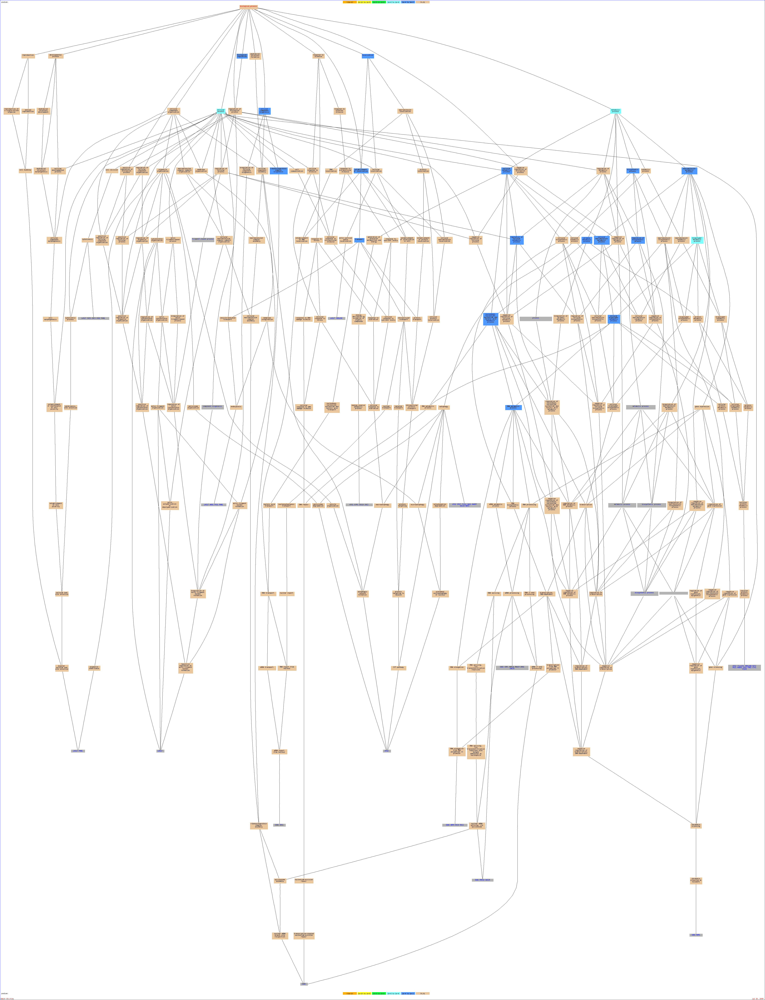

Of your input list, 312 genes are known or unknown but not ambiguous. The total number of genes used to calculate the background distribution of GO terms is 7274.Result Table| Terms from the Process Ontology of gene_association.sgd with p-value <= 0.01 | | Gene Ontology term | Cluster frequency | Genome frequency | Corrected
P-value | FDR | False
Positives | Genes annotated to the term |
|---|
| cellular process | 270 of 312 genes, 86.5% | 5304 of 7274 genes, 72.9% | 1.02e-06 | 0.00% | 0.00 | ATG2, LAS17, SUB2, GCN20, PDE2, SPO7, MET17, CAR1, YIL023C, CTF3, FCY21, DED1, ARN1, GAS3, PLM2, CDD1, RNR1, YPS3, YBR108W, HST2, CHS3, TEL2, MIG2, MET12, CDC28, YDL046W, LCB1, TIS11, FRE1, DIP2, PAC1, WHI3, CDC9, REX2, FRE6, HAC1, SCW10, CBP1, FET3, CIC1, KAR2, YDR412W, YLR437C, SEC61, SSN2, RAD57, SEC53, PCL5, SEC24, BUD17, FPR4, GYP6, GPI16, GPM3, CAN1, PDI1, RAD51, AKR1, CDC3, YLR243W, NHP6A, VMA5, YOL019W, YGL140C, CLB4, ALG6, ARP9, NUP192, YEH1, CDC6, ISU1, RPB5, RBD2, THI80, YPL105C, FUN12, APM1, IMP4, YOR390W, CDC123, FLO1, YDR020C, VRG4, HST1, OST1, SUR2, ALD5, MAP1, ERS1, TUB1, GWT1, DSS4, IMP2', NAB2, YJR030C, GIC1, BUD23, FUI1, YRB1, MET1, PAD1, MET2, RPL4A, SWE1, YPL030W, DBP8, NMA1, HOC1, SIT1, RFA1, HXK2, FCY2, AXL2, YBR141C, UTP6, EFT1, DEP1, GPI10, AAC3, STE14, YBR197C, PRP19, RSC9, DAT1, ICE2, SUT2, MCK1, ARE1, YJR015W, PDR17, COX19, FRE2, FTR1, ZRT1, EMP70, SEN34, CPS1, CAC2, RNA15, STT3, YLR179C, ARO7, SSB2, FMO1, SML1, HCR1, SHR5, YHL029C, VPS74, YLR194C, SUR4, CDC45, MNN5, YIP3, SGD1, DHR2, YLR022C, DHH1, YPL267W, HIP1, LAS21, CWC25, FKS1, RNT1, UBS1, EPT1, DAL1, RPS1A, SCJ1, GND1, SPC97, RSP5, YGL050W, ORC3, GDH1, GIN4, PHO91, AVT3, YFR055W, ALG12, OST6, FUN26, POL12, UNG1, RPO21, PXL1, SWM1, YDR352W, PMT2, CHS2, YDR179W-A, GSF2, GAS1, RRN6, RTT107, PUF6, DCG1, NIS1, YNL158W, HHO1, YPR174C, NCS6, MED6, CDC60, TAF13, FCY22, MCD1, TUP1, MAK11, PFK27, TRS33, SBH1, STV1, ZDS1, YGR271C-A, TRS130, YOR084W, CPT1, NHP6B, YOR129C, MET28, PAN1, NIP1, YPL108W, CPR7, NEW1, CCC2, RPC53, CLN3, YPL208W, RPS27A, YOX1, HCM1, VID24, CKA2, RFA2, GEA2, SPC98, OGG1, LRO1, BUB2, MCH5, SCW11, GSY1, PPZ1, MRT4, FUR4, PUS2, MMP1, YHR032W, RIX7, STE20, RSC2, YOR246C, RRP40, RNH1, PMT4, RAP1, NKP2, SLX9, TBF1, IZH3, NNT1, RRN7, SUC2, YPL279C, NCP1, SUI1, STB1, KRR1 | | metal ion transport | 18 of 312 genes, 5.8% | 87 of 7274 genes, 1.2% | 1.45e-05 | 0.00% | 0.00 | SIT1, FRE6, ARN1, HIP1, PHO90, FIT3, MID1, COX19, FET3, YNL321W, FRE2, FTR1, CCC2, ZRT1, YIL023C, SMF2, PHO91, FRE1 | | metabolic process | 237 of 312 genes, 76.0% | 4527 of 7274 genes, 62.2% | 4.73e-05 | 0.00% | 0.00 | RSC9, SIM1, DAT1, ATG2, SUT2, ICE2, SUB2, MCK1, ARE1, YJR015W, GCN20, PDE2, SPO7, MET17, PDR17, COX19, CAR1, FRE2, FTR1, YIL023C, CPS1, SEN34, CAC2, FCY21, RNA15, STT3, YLR179C, ARO7, SSB2, DED1, GAS3, PLM2, CDD1, RNR1, FMO1, YPS3, YBR108W, HST2, SML1, YDR111C, CHS3, HCR1, YER152C, TEL2, MIG2, SHR5, MET12, CDC28, VPS74, CDC45, SUR4, LCB1, MNN5, TIS11, FRE1, DIP2, PAC1, WHI3, SGD1, CDC9, REX2, FRE6, DHR2, YLR022C, DHH1, HIP1, YPL267W, LAS21, HAC1, FKS1, CWC25, SCW10, RNT1, EPT1, CBP1, UBS1, FET3, DAL1, SCJ1, RPS1A, GND1, CIC1, RSP5, YGL050W, KAR2, ORC3, GDH1, PHO91, GIN4, YDR412W, YLR437C, SEC61, SSN2, RAD57, YFR055W, SEC53, PCL5, ALG12, OST6, FUN26, SEC24, POL12, UNG1, BUD17, FPR4, GYP6, GPI16, RPO21, GPM3, YDR352W, SWM1, PMT2, PDI1, YDR179W-A, CHS2, RAD51, GSF2, AKR1, RRN6, YLR243W, NHP6A, VMA5, RTT107, YOL019W, PUF6, YGL140C, DCG1, NIS1, CLB4, YNL158W, YPR174C, HHO1, ALG6, MED6, NCS6, TAF13, CDC60, FCY22, ARP9, TUP1, PFK27, MAK11, STV1, ZDS1, YEH1, CDC6, STE24, ISU1, YGR271C-A, RPB5, RBD2, THI80, CPT1, NHP6B, MET28, NIP1, YPL105C, FUN12, YPL108W, CPR7, CCC2, RPC53, IMP4, YOR390W, CLN3, YPL208W, CDC123, YOX1, RPS27A, YDR020C, HCM1, VID24, VRG4, HST1, SUR2, CKA2, OST1, ALD5, MAP1, RFA2, GWT1, DSS4, OGG1, LRO1, IMP2', NAB2, YJR030C, MCH5, SCW11, GSY1, MRT4, PPZ1, BUD23, FUI1, FUR4, PUS2, YRB1, MET1, MMP1, PAD1, MET2, RPL4A, SWE1, YPL030W, DBP8, NMA1, HOC1, YHR032W, STE20, RSC2, YOR246C, RRP40, PMT4, RNH1, RAP1, NKP2, SLX9, TBF1, RFA1, IZH3, HXK2, AXL2, YBR141C, UTP6, NNT1, EFT1, DEP1, RRN7, GPI10, SUC2, AAC3, STE14, SUI1, NCP1, YBR197C, PRP19, KRR1 | | biopolymer metabolic process | 199 of 312 genes, 63.8% | 3598 of 7274 genes, 49.5% | 7.61e-05 | 0.00% | 0.00 | RSC9, SIM1, DAT1, ATG2, SUT2, ICE2, SUB2, MCK1, YJR015W, GCN20, PDE2, FTR1, YIL023C, CPS1, SEN34, CAC2, FCY21, RNA15, STT3, YLR179C, SSB2, DED1, PLM2, RNR1, FMO1, YPS3, YBR108W, HST2, SML1, CHS3, HCR1, TEL2, MIG2, SHR5, CDC28, VPS74, CDC45, LCB1, MNN5, TIS11, FRE1, DIP2, PAC1, WHI3, SGD1, CDC9, REX2, DHR2, YLR022C, DHH1, HIP1, YPL267W, LAS21, HAC1, FKS1, CWC25, RNT1, CBP1, UBS1, FET3, SCJ1, RPS1A, GND1, CIC1, RSP5, YGL050W, KAR2, ORC3, GDH1, PHO91, GIN4, YDR412W, YLR437C, SEC61, SSN2, RAD57, YFR055W, PCL5, ALG12, OST6, FUN26, SEC24, POL12, UNG1, BUD17, FPR4, GPI16, RPO21, GPM3, YDR352W, SWM1, PMT2, PDI1, YDR179W-A, CHS2, RAD51, GSF2, AKR1, RRN6, YLR243W, NHP6A, VMA5, RTT107, YOL019W, PUF6, YGL140C, NIS1, YNL158W, YPR174C, HHO1, ALG6, MED6, NCS6, TAF13, CDC60, FCY22, ARP9, TUP1, PFK27, MAK11, STV1, ZDS1, YEH1, CDC6, STE24, ISU1, YGR271C-A, RPB5, NHP6B, MET28, NIP1, YPL105C, FUN12, YPL108W, CPR7, RPC53, IMP4, YOR390W, YPL208W, CDC123, YOX1, RPS27A, YDR020C, HCM1, VID24, HST1, VRG4, CKA2, OST1, MAP1, RFA2, GWT1, DSS4, OGG1, IMP2', NAB2, YJR030C, MCH5, SCW11, GSY1, MRT4, BUD23, FUI1, FUR4, PUS2, YRB1, MMP1, RPL4A, SWE1, YPL030W, DBP8, NMA1, HOC1, YHR032W, STE20, RSC2, RRP40, PMT4, RNH1, RAP1, SLX9, TBF1, RFA1, HXK2, AXL2, YBR141C, UTP6, NNT1, EFT1, DEP1, RRN7, GPI10, AAC3, STE14, SUI1, NCP1, YBR197C, PRP19, KRR1 | | nucleobase, nucleoside, nucleotide and nucleic acid metabolic process | 131 of 312 genes, 42.0% | 2087 of 7274 genes, 28.7% | 0.00012 | 0.00% | 0.00 | RSC9, DAT1, SUT2, ICE2, SUB2, MCK1, PDE2, FTR1, SEN34, CAC2, FCY21, RNA15, DED1, PLM2, CDD1, RNR1, HST2, SML1, HCR1, TEL2, MIG2, CDC28, CDC45, TIS11, FRE1, DIP2, PAC1, CDC9, SGD1, REX2, DHR2, YLR022C, DHH1, HIP1, YPL267W, HAC1, CWC25, RNT1, CBP1, DAL1, RPS1A, GND1, CIC1, RSP5, YGL050W, ORC3, YDR412W, YLR437C, SSN2, RAD57, YFR055W, PCL5, POL12, UNG1, BUD17, FPR4, RPO21, YDR352W, YDR179W-A, RAD51, RRN6, YLR243W, NHP6A, VMA5, RTT107, PUF6, YOL019W, HHO1, YPR174C, MED6, NCS6, CDC60, TAF13, ARP9, FCY22, TUP1, MAK11, STV1, ZDS1, YEH1, CDC6, ISU1, YGR271C-A, RPB5, NHP6B, MET28, YPL108W, CCC2, IMP4, RPC53, YOR390W, CDC123, RPS27A, YOX1, HCM1, YDR020C, HST1, CKA2, RFA2, DSS4, OGG1, NAB2, IMP2', YJR030C, MCH5, MRT4, BUD23, FUI1, FUR4, PUS2, YPL030W, DBP8, YHR032W, NMA1, STE20, RSC2, RRP40, RNH1, RAP1, SLX9, TBF1, RFA1, HXK2, YBR141C, UTP6, NNT1, DEP1, RRN7, YBR197C, KRR1, PRP19 | | establishment of localization | 88 of 312 genes, 28.2% | 1233 of 7274 genes, 17.0% | 0.00018 | 0.00% | 0.00 | YNL158W, ATG2, SUT2, YPR174C, LAS17, SUB2, FCY22, NUP192, MID1, PDR17, COX19, FRE2, FTR1, YDR119W, TRS33, SBH1, STV1, ZDS1, ZRT1, YIL023C, PET8, FCY21, TRS130, ARN1, PAN1, APM1, NEW1, CCC2, MIG2, SHR5, VPS74, CLN3, SUR4, YDL046W, FRE1, YIP3, WHI3, PAC1, VID24, FRE6, VRG4, YLR022C, DHH1, RFA2, HIP1, ERS1, TUB1, GEA2, DSS4, FKS1, FIT3, YMD8, NAB2, AVT5, UBS1, FET3, MCH5, SCJ1, RSP5, KAR2, BUD23, FUI1, PHO91, FUR4, YRB1, MMP1, SEC61, AVT3, SEC53, YHR032W, RIX7, SIT1, FUN26, SEC24, PHO90, GYP6, RFA1, HXK2, MUP1, FCY2, YNL321W, CAN1, AKR1, SMF2, DAL5, AAC3, VMA5, PUF6 | | biological regulation | 113 of 312 genes, 36.2% | 1731 of 7274 genes, 23.8% | 0.00021 | 0.00% | 0.00 | RSC9, CLB4, DAT1, SUT2, HHO1, LAS17, SUB2, MCK1, MED6, YOL092W, TAF13, GCN20, ARP9, PDE2, SPO7, TUP1, PFK27, FTR1, STV1, ZDS1, CDC6, EMP70, CAC2, ISU1, TRS130, STT3, YLR179C, SSB2, DED1, ARN1, NHP6B, MET28, YPL105C, HST2, SML1, HCR1, CCC2, TEL2, MIG2, YHL029C, CDC28, VPS74, CLN3, CDC45, YPL208W, LCB1, CDC123, YOX1, TIS11, WHI3, HCM1, VID24, HST1, FRE6, REX2, CKA2, DHH1, RFA2, YPL267W, DSS4, HAC1, GEA2, FKS1, BUB2, NAB2, FET3, YJR030C, GND1, SCW11, RSP5, GIC1, PPZ1, ORC3, GDH1, PHO91, GIN4, SWE1, SSN2, RAD57, YFR055W, NMA1, PCL5, STE20, OST6, RSC2, SIT1, POL12, FPR4, RAP1, GYP6, IZH3, RFA1, TBF1, HXK2, GPM3, PDI1, NNT1, YML018C, RAD51, AKR1, DEP1, RRN6, RRN7, NHP6A, AAC3, VMA5, RTT107, PUF6, YOL019W, SUI1, NCP1, YGL140C, PRP19 | | RNA metabolic process | 106 of 312 genes, 34.0% | 1590 of 7274 genes, 21.9% | 0.00021 | 0.00% | 0.00 | RSC9, DAT1, SUT2, ICE2, HHO1, SUB2, NCS6, MED6, TAF13, CDC60, FCY22, ARP9, PDE2, TUP1, MAK11, FTR1, ZDS1, YEH1, CDC6, SEN34, CAC2, ISU1, YGR271C-A, FCY21, RNA15, RPB5, DED1, NHP6B, MET28, HST2, YPL108W, HCR1, MIG2, RPC53, CDC28, IMP4, YOR390W, CDC45, CDC123, YOX1, RPS27A, TIS11, FRE1, DIP2, YDR020C, PAC1, HCM1, SGD1, REX2, HST1, DHR2, YLR022C, CKA2, DHH1, YPL267W, HIP1, DSS4, HAC1, CWC25, RNT1, NAB2, CBP1, MCH5, RPS1A, CIC1, RSP5, YGL050W, MRT4, ORC3, BUD23, FUI1, PUS2, FUR4, YDR412W, YLR437C, SSN2, YPL030W, DBP8, YFR055W, NMA1, YHR032W, STE20, RSC2, RRP40, RNH1, BUD17, FPR4, RAP1, SLX9, TBF1, HXK2, RPO21, YDR352W, YBR141C, YDR179W-A, UTP6, NNT1, DEP1, RRN6, RRN7, NHP6A, RTT107, PUF6, YBR197C, PRP19, KRR1 | | ribosome biogenesis | 62 of 312 genes, 19.9% | 761 of 7274 genes, 10.5% | 0.00022 | 0.00% | 0.00 | DIP2, YDR020C, RSC9, PAC1, REX2, DAT1, SUT2, ICE2, DHR2, YLR022C, CKA2, SUR2, ALD5, NCS6, HIP1, RNT1, MAK11, MCH5, FTR1, RPS1A, CIC1, RSP5, YEH1, YGL050W, MRT4, SEN34, FUI1, BUD23, FUR4, YDR412W, YGR271C-A, YPL030W, DBP8, FCY21, STE20, RIX7, THI80, DED1, RRP40, POL12, BUD17, RAP1, SLX9, GPM3, FCY2, YBR141C, YPL108W, HCR1, YDR179W-A, UTP6, IMP4, RRN6, YOR390W, RRN7, MNN5, CDC123, YPL279C, RPS27A, SUI1, PRP19, FRE1, KRR1 | | macromolecule metabolic process | 200 of 312 genes, 64.1% | 3664 of 7274 genes, 50.4% | 0.00022 | 0.00% | 0.00 | RSC9, SIM1, DAT1, ATG2, SUT2, ICE2, SUB2, MCK1, YJR015W, GCN20, PDE2, FTR1, YIL023C, CPS1, SEN34, CAC2, FCY21, RNA15, STT3, YLR179C, SSB2, DED1, PLM2, RNR1, FMO1, YPS3, YBR108W, HST2, SML1, CHS3, HCR1, TEL2, MIG2, SHR5, CDC28, VPS74, CDC45, LCB1, MNN5, TIS11, FRE1, DIP2, PAC1, WHI3, SGD1, CDC9, REX2, DHR2, YLR022C, DHH1, HIP1, YPL267W, LAS21, HAC1, FKS1, CWC25, RNT1, CBP1, UBS1, FET3, SCJ1, RPS1A, GND1, CIC1, RSP5, YGL050W, KAR2, ORC3, GDH1, PHO91, GIN4, YDR412W, YLR437C, SEC61, SSN2, RAD57, YFR055W, PCL5, ALG12, OST6, FUN26, SEC24, POL12, UNG1, BUD17, FPR4, GPI16, RPO21, GPM3, YDR352W, SWM1, PMT2, PDI1, YDR179W-A, CHS2, RAD51, GSF2, AKR1, RRN6, YLR243W, NHP6A, VMA5, RTT107, YOL019W, PUF6, YGL140C, NIS1, YNL158W, YPR174C, HHO1, ALG6, MED6, NCS6, TAF13, CDC60, FCY22, ARP9, TUP1, PFK27, MAK11, STV1, ZDS1, YEH1, CDC6, STE24, ISU1, YGR271C-A, RPB5, NHP6B, MET28, NIP1, YPL105C, FUN12, YPL108W, CPR7, RPC53, IMP4, YOR390W, YPL208W, CDC123, YOX1, RPS27A, YDR020C, HCM1, VID24, HST1, VRG4, CKA2, OST1, MAP1, RFA2, GWT1, DSS4, OGG1, IMP2', NAB2, YJR030C, MCH5, SCW11, GSY1, MRT4, BUD23, FUI1, FUR4, PUS2, YRB1, MMP1, RPL4A, SWE1, YPL030W, DBP8, NMA1, HOC1, YHR032W, STE20, RSC2, RRP40, PMT4, RNH1, RAP1, SLX9, TBF1, RFA1, HXK2, AXL2, YBR141C, UTP6, NNT1, EFT1, DEP1, RRN7, GPI10, SUC2, AAC3, STE14, SUI1, NCP1, YBR197C, PRP19, KRR1 | | localization | 92 of 312 genes, 29.5% | 1316 of 7274 genes, 18.1% | 0.00023 | 0.00% | 0.00 | YNL158W, ATG2, SUT2, YPR174C, LAS17, SUB2, FCY22, NUP192, MID1, PDR17, COX19, FRE2, FTR1, YDR119W, TRS33, SBH1, STV1, ZDS1, ZRT1, YIL023C, PET8, FCY21, TRS130, YOR129C, ARN1, PAN1, APM1, NEW1, CCC2, TEL2, MIG2, SHR5, VPS74, CLN3, SUR4, YDL046W, FRE1, YIP3, WHI3, PAC1, VID24, FRE6, VRG4, YLR022C, DHH1, RFA2, HIP1, ERS1, TUB1, GEA2, DSS4, FKS1, FIT3, LRO1, YMD8, NAB2, AVT5, UBS1, FET3, MCH5, SCJ1, RSP5, KAR2, BUD23, FUI1, PHO91, FUR4, YRB1, MMP1, SEC61, AVT3, SEC53, YHR032W, RIX7, SIT1, FUN26, SEC24, PHO90, GYP6, RFA1, HXK2, MUP1, FCY2, YNL321W, CAN1, GSF2, AKR1, SMF2, DAL5, AAC3, VMA5, PUF6 | | ribonucleoprotein complex biogenesis | 64 of 312 genes, 20.5% | 803 of 7274 genes, 11.0% | 0.00031 | 0.00% | 0.00 | DIP2, YDR020C, RSC9, PAC1, REX2, DAT1, SUT2, ICE2, DHR2, YLR022C, CKA2, SUR2, ALD5, SUB2, DHH1, NCS6, HIP1, RNT1, MAK11, MCH5, FTR1, RPS1A, CIC1, RSP5, YEH1, YGL050W, MRT4, SEN34, FUI1, BUD23, FUR4, YDR412W, YGR271C-A, YPL030W, DBP8, FCY21, STE20, RIX7, THI80, DED1, RRP40, POL12, BUD17, RAP1, SLX9, GPM3, FCY2, YBR141C, YPL108W, HCR1, YDR179W-A, UTP6, IMP4, RRN6, YOR390W, RRN7, MNN5, CDC123, YPL279C, RPS27A, SUI1, PRP19, FRE1, KRR1 | | transport | 86 of 312 genes, 27.6% | 1212 of 7274 genes, 16.7% | 0.00035 | 0.00% | 0.00 | YNL158W, ATG2, SUT2, YPR174C, LAS17, SUB2, FCY22, NUP192, MID1, PDR17, COX19, FRE2, FTR1, YDR119W, TRS33, SBH1, STV1, ZDS1, ZRT1, YIL023C, PET8, FCY21, TRS130, ARN1, PAN1, APM1, NEW1, CCC2, MIG2, SHR5, VPS74, CLN3, SUR4, YDL046W, FRE1, YIP3, WHI3, PAC1, VID24, FRE6, VRG4, YLR022C, DHH1, HIP1, ERS1, TUB1, GEA2, DSS4, FKS1, FIT3, NAB2, YMD8, AVT5, UBS1, FET3, MCH5, SCJ1, RSP5, KAR2, BUD23, FUI1, PHO91, FUR4, YRB1, MMP1, SEC61, AVT3, SEC53, YHR032W, RIX7, SIT1, FUN26, SEC24, PHO90, GYP6, HXK2, MUP1, FCY2, YNL321W, CAN1, AKR1, SMF2, DAL5, AAC3, VMA5, PUF6 | | cellular component biogenesis | 88 of 312 genes, 28.2% | 1256 of 7274 genes, 17.3% | 0.00042 | 0.00% | 0.00 | RSC9, DAT1, ATG2, SUT2, ICE2, HHO1, LAS17, SUB2, NCS6, TAF13, TUP1, COX19, MAK11, FTR1, YEH1, CDC6, SEN34, CAC2, YGR271C-A, FCY21, THI80, DED1, NHP6B, PAN1, HST2, YPL108W, HCR1, CHS3, IMP4, YOR390W, CDC45, MNN5, CDC123, RPS27A, FRE1, DIP2, YDR020C, PAC1, REX2, DHR2, SUR2, CKA2, YLR022C, DHH1, ALD5, HIP1, TUB1, RNT1, MCH5, RPS1A, CIC1, RSP5, YGL050W, MRT4, ORC3, GIN4, BUD23, FUI1, FUR4, YDR412W, YPL030W, DBP8, RAD57, HOC1, STE20, RIX7, OST6, RRP40, POL12, BUD17, FPR4, RAP1, SLX9, TBF1, GPM3, SWM1, FCY2, YBR141C, YDR179W-A, UTP6, RAD51, RRN6, RRN7, NHP6A, YPL279C, SUI1, PRP19, KRR1 | | cellular biopolymer metabolic process | 190 of 312 genes, 60.9% | 3452 of 7274 genes, 47.5% | 0.00043 | 0.00% | 0.00 | RSC9, DAT1, ATG2, SUT2, ICE2, SUB2, MCK1, YJR015W, GCN20, PDE2, FTR1, YIL023C, CPS1, SEN34, CAC2, FCY21, RNA15, STT3, YLR179C, SSB2, DED1, PLM2, RNR1, FMO1, YBR108W, HST2, SML1, CHS3, HCR1, TEL2, MIG2, SHR5, CDC28, VPS74, CDC45, LCB1, MNN5, TIS11, FRE1, DIP2, PAC1, WHI3, SGD1, CDC9, REX2, DHR2, YLR022C, DHH1, HIP1, YPL267W, LAS21, HAC1, FKS1, CWC25, RNT1, CBP1, UBS1, SCJ1, RPS1A, GND1, CIC1, RSP5, YGL050W, KAR2, ORC3, GDH1, PHO91, GIN4, YDR412W, YLR437C, SSN2, RAD57, YFR055W, PCL5, ALG12, OST6, FUN26, POL12, UNG1, BUD17, FPR4, GPI16, RPO21, GPM3, YDR352W, SWM1, PMT2, PDI1, YDR179W-A, CHS2, RAD51, GSF2, AKR1, RRN6, YLR243W, NHP6A, VMA5, RTT107, YOL019W, PUF6, YGL140C, YNL158W, YPR174C, HHO1, ALG6, MED6, NCS6, TAF13, CDC60, FCY22, ARP9, TUP1, PFK27, MAK11, STV1, ZDS1, YEH1, CDC6, ISU1, YGR271C-A, RPB5, NHP6B, MET28, NIP1, FUN12, YPL105C, YPL108W, CPR7, RPC53, IMP4, YOR390W, YPL208W, CDC123, YOX1, RPS27A, YDR020C, HCM1, VID24, HST1, VRG4, CKA2, OST1, RFA2, GWT1, DSS4, OGG1, IMP2', NAB2, YJR030C, MCH5, SCW11, GSY1, MRT4, BUD23, FUI1, FUR4, PUS2, YRB1, MMP1, RPL4A, SWE1, YPL030W, DBP8, NMA1, HOC1, YHR032W, STE20, RSC2, RRP40, PMT4, RNH1, RAP1, SLX9, TBF1, RFA1, HXK2, YBR141C, UTP6, NNT1, EFT1, DEP1, RRN7, GPI10, AAC3, STE14, SUI1, NCP1, YBR197C, PRP19, KRR1 | | transition metal ion transport | 13 of 312 genes, 4.2% | 57 of 7274 genes, 0.8% | 0.00044 | 0.00% | 0.00 | FRE2, FTR1, CCC2, SIT1, FRE6, ZRT1, YIL023C, ARN1, SMF2, HIP1, FIT3, FET3, FRE1 | | cation transport | 20 of 312 genes, 6.4% | 136 of 7274 genes, 1.9% | 0.00087 | 0.00% | 0.00 | SIT1, FRE6, ARN1, HIP1, PHO90, FIT3, MID1, COX19, FET3, YNL321W, FRE2, FTR1, STV1, CCC2, ZRT1, YIL023C, SMF2, PHO91, VMA5, FRE1 | | cellular metabolic process | 225 of 312 genes, 72.1% | 4334 of 7274 genes, 59.6% | 0.00088 | 0.00% | 0.00 | RSC9, DAT1, ATG2, SUT2, ICE2, SUB2, MCK1, ARE1, YJR015W, GCN20, PDE2, SPO7, MET17, PDR17, COX19, CAR1, FRE2, FTR1, YIL023C, CPS1, SEN34, CAC2, FCY21, RNA15, STT3, YLR179C, ARO7, SSB2, DED1, PLM2, CDD1, RNR1, FMO1, YBR108W, HST2, SML1, CHS3, HCR1, TEL2, MIG2, SHR5, MET12, CDC28, VPS74, CDC45, SUR4, LCB1, MNN5, TIS11, FRE1, DIP2, PAC1, WHI3, SGD1, CDC9, REX2, FRE6, DHR2, YLR022C, DHH1, HIP1, YPL267W, LAS21, HAC1, FKS1, CWC25, RNT1, EPT1, CBP1, UBS1, DAL1, SCJ1, RPS1A, GND1, CIC1, RSP5, YGL050W, KAR2, ORC3, GDH1, PHO91, GIN4, YDR412W, YLR437C, SSN2, RAD57, YFR055W, SEC53, PCL5, ALG12, OST6, FUN26, SEC24, POL12, UNG1, BUD17, FPR4, GYP6, GPI16, RPO21, GPM3, YDR352W, SWM1, PMT2, PDI1, YDR179W-A, CHS2, RAD51, GSF2, AKR1, RRN6, YLR243W, NHP6A, VMA5, RTT107, YOL019W, PUF6, YGL140C, DCG1, CLB4, YNL158W, YPR174C, HHO1, ALG6, MED6, NCS6, TAF13, CDC60, FCY22, ARP9, TUP1, PFK27, MAK11, STV1, ZDS1, YEH1, CDC6, ISU1, YGR271C-A, RPB5, RBD2, THI80, CPT1, NHP6B, MET28, NIP1, YPL105C, FUN12, YPL108W, CPR7, CCC2, RPC53, IMP4, CLN3, YOR390W, YPL208W, CDC123, YOX1, RPS27A, YDR020C, HCM1, VID24, HST1, VRG4, SUR2, CKA2, OST1, ALD5, RFA2, GWT1, DSS4, OGG1, LRO1, IMP2', NAB2, YJR030C, MCH5, SCW11, GSY1, MRT4, PPZ1, BUD23, FUI1, FUR4, PUS2, YRB1, MET1, MMP1, PAD1, MET2, RPL4A, SWE1, YPL030W, DBP8, NMA1, HOC1, YHR032W, STE20, RSC2, YOR246C, RRP40, PMT4, RNH1, RAP1, NKP2, SLX9, TBF1, RFA1, IZH3, HXK2, YBR141C, UTP6, NNT1, EFT1, DEP1, RRN7, GPI10, SUC2, AAC3, STE14, SUI1, NCP1, YBR197C, PRP19, KRR1 | | cellular macromolecule metabolic process | 191 of 312 genes, 61.2% | 3514 of 7274 genes, 48.3% | 0.00113 | 0.00% | 0.00 | RSC9, DAT1, ATG2, SUT2, ICE2, SUB2, MCK1, YJR015W, GCN20, PDE2, FTR1, YIL023C, CPS1, SEN34, CAC2, FCY21, RNA15, STT3, YLR179C, SSB2, DED1, PLM2, RNR1, FMO1, YBR108W, HST2, SML1, CHS3, HCR1, TEL2, MIG2, SHR5, CDC28, VPS74, CDC45, LCB1, MNN5, TIS11, FRE1, DIP2, PAC1, WHI3, SGD1, CDC9, REX2, DHR2, YLR022C, DHH1, HIP1, YPL267W, LAS21, HAC1, FKS1, CWC25, RNT1, CBP1, UBS1, SCJ1, RPS1A, GND1, CIC1, RSP5, YGL050W, KAR2, ORC3, GDH1, PHO91, GIN4, YDR412W, YLR437C, SSN2, RAD57, YFR055W, PCL5, ALG12, OST6, FUN26, POL12, UNG1, BUD17, FPR4, GPI16, RPO21, GPM3, YDR352W, SWM1, PMT2, PDI1, YDR179W-A, CHS2, RAD51, GSF2, AKR1, RRN6, YLR243W, NHP6A, VMA5, RTT107, YOL019W, PUF6, YGL140C, YNL158W, YPR174C, HHO1, ALG6, MED6, NCS6, TAF13, CDC60, FCY22, ARP9, TUP1, PFK27, MAK11, STV1, ZDS1, YEH1, CDC6, ISU1, YGR271C-A, RPB5, NHP6B, MET28, NIP1, FUN12, YPL105C, YPL108W, CPR7, RPC53, IMP4, YOR390W, YPL208W, CDC123, YOX1, RPS27A, YDR020C, HCM1, VID24, HST1, VRG4, CKA2, OST1, RFA2, GWT1, DSS4, OGG1, IMP2', NAB2, YJR030C, MCH5, SCW11, GSY1, MRT4, BUD23, FUI1, FUR4, PUS2, YRB1, MMP1, RPL4A, SWE1, YPL030W, DBP8, NMA1, HOC1, YHR032W, STE20, RSC2, RRP40, PMT4, RNH1, RAP1, SLX9, TBF1, RFA1, HXK2, YBR141C, UTP6, NNT1, EFT1, DEP1, RRN7, GPI10, SUC2, AAC3, STE14, SUI1, NCP1, YBR197C, PRP19, KRR1 | | chromatin assembly or disassembly | 15 of 312 genes, 4.8% | 82 of 7274 genes, 1.1% | 0.00122 | 0.00% | 0.00 | RSC9, NEW1, RSC2, RSP5, HHO1, NHP6B, CDC6, FPR4, CAC2, CDC45, NHP6A, TBF1, ARP9, HST2, TUP1 | | primary metabolic process | 214 of 312 genes, 68.6% | 4087 of 7274 genes, 56.2% | 0.00170 | 0.00% | 0.00 | RSC9, DAT1, ATG2, SUT2, ICE2, SUB2, MCK1, ARE1, YJR015W, GCN20, PDE2, SPO7, MET17, PDR17, CAR1, FTR1, YIL023C, CPS1, SEN34, CAC2, FCY21, RNA15, STT3, YLR179C, ARO7, SSB2, DED1, GAS3, PLM2, CDD1, RNR1, FMO1, YPS3, YBR108W, HST2, SML1, CHS3, HCR1, TEL2, MIG2, SHR5, MET12, CDC28, VPS74, CDC45, SUR4, LCB1, MNN5, TIS11, FRE1, DIP2, PAC1, WHI3, SGD1, CDC9, REX2, DHR2, YLR022C, DHH1, HIP1, YPL267W, LAS21, HAC1, FKS1, CWC25, SCW10, RNT1, EPT1, CBP1, UBS1, DAL1, SCJ1, RPS1A, GND1, CIC1, RSP5, YGL050W, KAR2, ORC3, GDH1, PHO91, GIN4, YDR412W, YLR437C, SSN2, RAD57, YFR055W, SEC53, PCL5, ALG12, OST6, FUN26, POL12, UNG1, BUD17, FPR4, GPI16, RPO21, GPM3, YDR352W, SWM1, PMT2, PDI1, YDR179W-A, CHS2, RAD51, GSF2, AKR1, RRN6, YLR243W, NHP6A, VMA5, RTT107, YOL019W, PUF6, YGL140C, YNL158W, YPR174C, HHO1, ALG6, MED6, NCS6, TAF13, CDC60, FCY22, ARP9, TUP1, PFK27, MAK11, STV1, ZDS1, YEH1, CDC6, STE24, ISU1, YGR271C-A, RPB5, CPT1, NHP6B, MET28, NIP1, YPL105C, FUN12, YPL108W, CPR7, CCC2, RPC53, IMP4, YOR390W, YPL208W, CDC123, YOX1, RPS27A, YDR020C, HCM1, VID24, HST1, VRG4, SUR2, CKA2, OST1, MAP1, RFA2, GWT1, DSS4, OGG1, LRO1, IMP2', NAB2, YJR030C, MCH5, SCW11, GSY1, MRT4, BUD23, FUI1, FUR4, PUS2, YRB1, MET1, MMP1, MET2, RPL4A, SWE1, YPL030W, DBP8, NMA1, HOC1, YHR032W, STE20, RSC2, RRP40, PMT4, RNH1, RAP1, SLX9, TBF1, RFA1, HXK2, YBR141C, UTP6, NNT1, EFT1, DEP1, RRN7, GPI10, SUC2, AAC3, STE14, SUI1, NCP1, YBR197C, PRP19, KRR1 | | rRNA metabolic process | 49 of 312 genes, 15.7% | 589 of 7274 genes, 8.1% | 0.00281 | 0.00% | 0.00 | DIP2, YDR020C, RSC9, PAC1, REX2, DAT1, SUT2, ICE2, DHR2, YLR022C, CKA2, NCS6, HIP1, RNT1, MAK11, MCH5, FTR1, RPS1A, RSP5, YEH1, YGL050W, MRT4, ORC3, FUI1, BUD23, FUR4, YDR412W, YGR271C-A, YPL030W, DBP8, FCY21, STE20, RRP40, BUD17, SLX9, YPL108W, YBR141C, HCR1, YDR179W-A, UTP6, IMP4, RRN6, YOR390W, RRN7, CDC123, RTT107, RPS27A, FRE1, KRR1 | | biosynthetic process | 144 of 312 genes, 46.2% | 2482 of 7274 genes, 34.1% | 0.00296 | 0.00% | 0.00 | RSC9, SIM1, DAT1, SUT2, SUB2, MCK1, ARE1, GCN20, SPO7, MET17, PDR17, CAC2, STT3, YLR179C, ARO7, SSB2, DED1, PLM2, RNR1, HST2, SML1, YDR111C, HCR1, CHS3, YER152C, TEL2, MIG2, SHR5, CDC28, VPS74, CDC45, SUR4, LCB1, MNN5, WHI3, CDC9, REX2, DHH1, YPL267W, LAS21, HAC1, FKS1, RNT1, EPT1, FET3, RPS1A, GND1, RSP5, ORC3, GDH1, PHO91, SSN2, SEC61, YFR055W, SEC53, PCL5, ALG12, OST6, SEC24, POL12, BUD17, FPR4, GPI16, RPO21, GPM3, PMT2, CHS2, AKR1, RRN6, YLR243W, NHP6A, VMA5, RTT107, PUF6, YOL019W, YGL140C, NIS1, YNL158W, HHO1, YPR174C, MED6, ALG6, CDC60, TAF13, ARP9, FCY22, TUP1, PFK27, ZDS1, YEH1, CDC6, ISU1, YGR271C-A, RPB5, THI80, CPT1, NHP6B, MET28, NIP1, FUN12, YPL105C, RPC53, YPL208W, CDC123, RPS27A, YOX1, HCM1, VID24, HST1, VRG4, CKA2, SUR2, OST1, ALD5, RFA2, GWT1, DSS4, LRO1, NAB2, SCW11, GSY1, FUR4, PUS2, MET1, MET2, RPL4A, HOC1, NMA1, RSC2, PMT4, RAP1, TBF1, RFA1, HXK2, AXL2, NNT1, DEP1, EFT1, RRN7, GPI10, AAC3, SUI1, NCP1, PRP19 | | regulation of biosynthetic process | 74 of 312 genes, 23.7% | 1066 of 7274 genes, 14.7% | 0.00678 | 0.00% | 0.00 | RSC9, DAT1, SUT2, HHO1, SUB2, MCK1, MED6, TAF13, GCN20, ARP9, SPO7, TUP1, PFK27, ZDS1, CDC6, CAC2, STT3, YLR179C, DED1, SSB2, NHP6B, MET28, YPL105C, HST2, SML1, HCR1, MIG2, CDC28, VPS74, CDC45, YPL208W, LCB1, CDC123, YOX1, WHI3, HCM1, VID24, HST1, REX2, CKA2, DHH1, YPL267W, HAC1, FKS1, NAB2, GND1, SCW11, RSP5, ORC3, GDH1, PHO91, SSN2, NMA1, PCL5, OST6, RSC2, FPR4, RAP1, TBF1, HXK2, GPM3, NNT1, DEP1, RRN6, RRN7, NHP6A, AAC3, VMA5, YOL019W, PUF6, SUI1, NCP1, YGL140C, PRP19 | | regulation of cellular metabolic process | 78 of 312 genes, 25.0% | 1144 of 7274 genes, 15.7% | 0.00702 | 0.00% | 0.00 | RSC9, CLB4, DAT1, SUT2, HHO1, SUB2, MCK1, MED6, TAF13, GCN20, ARP9, TUP1, PFK27, ZDS1, CDC6, CAC2, STT3, YLR179C, SSB2, DED1, NHP6B, MET28, YPL105C, HST2, SML1, HCR1, MIG2, CDC28, VPS74, CLN3, CDC45, YPL208W, LCB1, CDC123, YOX1, WHI3, HCM1, VID24, HST1, REX2, CKA2, DHH1, YPL267W, HAC1, FKS1, NAB2, YJR030C, GND1, SCW11, RSP5, ORC3, GDH1, PHO91, SSN2, SWE1, NMA1, PCL5, STE20, OST6, RSC2, FPR4, RAP1, TBF1, HXK2, GPM3, NNT1, DEP1, RRN6, RRN7, NHP6A, AAC3, VMA5, YOL019W, PUF6, SUI1, NCP1, YGL140C, PRP19 | | posttranscriptional regulation of gene expression | 39 of 312 genes, 12.5% | 441 of 7274 genes, 6.1% | 0.00765 | 0.00% | 0.00 | WHI3, REX2, CKA2, DHH1, MCK1, GCN20, FKS1, ARP9, TUP1, NAB2, PFK27, SCW11, GND1, GDH1, PHO91, NMA1, STT3, PCL5, OST6, YLR179C, DED1, SSB2, RAP1, HXK2, GPM3, YPL105C, HCR1, VPS74, YPL208W, NHP6A, CDC123, LCB1, AAC3, VMA5, PUF6, SUI1, NCP1, YGL140C, PRP19 |
Of your input list, 312 genes are known or unknown but not ambiguous. The total number of genes used to calculate the background distribution of GO terms is 7274.
Nodes in the graph are color-coded according to their p-value. Genes in the GO tree are associated with the GO term(s) to which they are directly annotated. To control the graph size, only significant hits with a p-value <= 0.01 and terms descended from them are included.

|
|


{kind=link}
{kind=link}